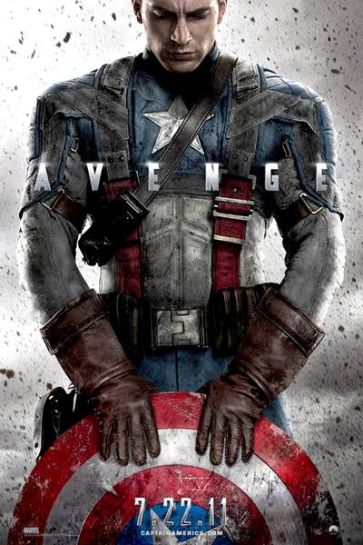
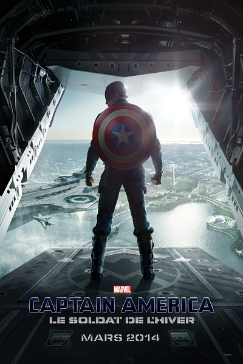

Le personnage de Captain America est apparu pour la première fois en décembre 1940,
véritable héros de divertissement de la Seconde Guerre mondiale, c'est pourtant seulement en 2011 que nous avons eu le plaisir de le voir sur nos écrans. Ce premier film traite donc
de la Seconde Guerre mondiale et de la lutte contre le nazisme durant cette période, imposant alors le personnage comme véritable héros, capable même de faire preuve de sacrifice
pour sauver sa nation. Il aura également vécu une histoire d'amour avec Peggy, travaillant dans l'armée, et étant à l'origine de la création du SHIELD. C'est alors que nous
découvront un jeune Steve Rogers, petit et frêle, et ayant une détermination sans faille à entrer dans l'armée, malgré de nombreux refus. C'est alors qu'il sera sélectionné par
le docteur Abraham Erskine pour tester un sérum qu'il a mis au point dans le but de créer une nouvelle "race" d'humain, étant plus fort que les autres. Seulement comme il l'explique
lui-même, le sérum renforce tout, les défauts comme les qualités, c'est pour cela qu'il choisi Steve. Car un homme faible connait la valeur de la force.

Lors du premier film, le Captain Rogers a perdu son ami d'enfance, surnommé "Bucky". Ce dernier a cependant été retrouvé en vie, 50 ans plus tard,
muni d'un bras cybermétique et semblant avoir subit un lavage de cerveau. Captain America étant son ami d'enfance va alors réussir à le ramener à lui. Un nouveau personnage
fait aussi son aparation, le "Faucon", ancien militaire, à la tête d'un club de soutient pour d'autres miliaires ayant subit des traumatimes. Il est ainsi nommé car il possède
des ailes bioniques lui mermettant de voler. C'est lors de ce film que nous apprenons que le SHIELD avait alors un lien avec HYDRA, et que des agents infiltrés se trouvent
toujours à l'intérieurs du SHIELD, une guerre interne va alors survenir dans l'organisation du SHIELD. Et c'est l'agent ROMANOV, Natasha, ou autrement appelée "la Veuve Noire"
qui va révéler au monde entier de nombreuses informations classées confidentielles, ce qui mènera à la destruction du SHIELD comme d'HYDRA.
Civil War signe une réelle rupture dans le groupe des Avengers. Les héros sont alors réhumanisés dans ce volet car
les problèmes auxquels ils sont confrontés sont plus humains. Il s'agit plus d'une déchirure au sein d'une famille, plutôt que d'aventures rocambolesques. Le sujet de discorde
étant la signature de traités menant à un contrôle des actions des Avengers. Deux groupes distincts vont alors se former et mener à une guerre interne. Le soldat de l'hiver refait son
apparition, ce qui n'arrangera en rien à la situation déjà chaotiques. Un nouveau héros fait son apparition, Black Panter, qui devrait prochainement profiter d'un film lui étant consacré.
Iron Man apprendra également que "Le Soldat de l'Hiver" est responsable de la mort de ses parents, alors qu'il était manipulé, mais Captain America étant dans la confidence et n'ayant rien
dit à son ami Tony Stark, celui-ci va le prendre pour une trahison de plus, ce qui conduira à une scène de combat entre les deux héros, allant presque jusqu'à la mort des deux anciens amis.
 Civil War signe une réelle rupture dans le groupe des Avengers. Les héros sont alors réhumanisés dans ce volet car
les problèmes auxquels ils sont confrontés sont plus humains. Il s'agit plus d'une déchirure au sein d'une famille, plutôt que d'aventures rocambolesques. Le sujet de discorde
étant la signature de traités menant à un contrôle des actions des Avengers. Deux groupes distincts vont alors se former et mener à une guerre interne. Le soldat de l'hiver refait son
apparition, ce qui n'arrangera en rien à la situation déjà chaotiques. Un nouveau héros fait son apparition, Black Panter, qui devrait prochainement profiter d'un film lui étant consacré.
Iron Man apprendra également que "Le Soldat de l'Hiver" est responsable de la mort de ses parents, alors qu'il était manipulé, mais Captain America étant dans la confidence et n'ayant rien
dit à son ami Tony Stark, celui-ci va le prendre pour une trahison de plus, ce qui conduira à une scène de combat entre les deux héros, allant presque jusqu'à la mort des deux anciens amis.
Civil War signe une réelle rupture dans le groupe des Avengers. Les héros sont alors réhumanisés dans ce volet car
les problèmes auxquels ils sont confrontés sont plus humains. Il s'agit plus d'une déchirure au sein d'une famille, plutôt que d'aventures rocambolesques. Le sujet de discorde
étant la signature de traités menant à un contrôle des actions des Avengers. Deux groupes distincts vont alors se former et mener à une guerre interne. Le soldat de l'hiver refait son
apparition, ce qui n'arrangera en rien à la situation déjà chaotiques. Un nouveau héros fait son apparition, Black Panter, qui devrait prochainement profiter d'un film lui étant consacré.
Iron Man apprendra également que "Le Soldat de l'Hiver" est responsable de la mort de ses parents, alors qu'il était manipulé, mais Captain America étant dans la confidence et n'ayant rien
dit à son ami Tony Stark, celui-ci va le prendre pour une trahison de plus, ce qui conduira à une scène de combat entre les deux héros, allant presque jusqu'à la mort des deux anciens amis.